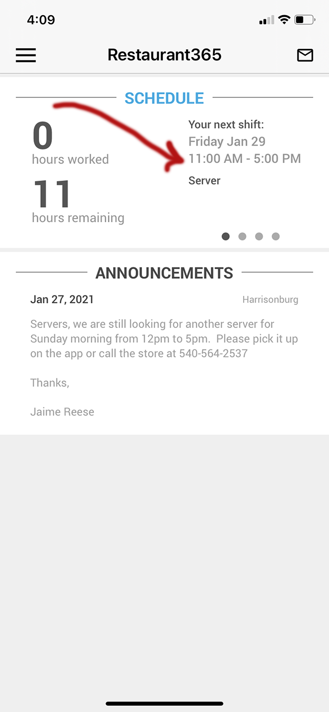
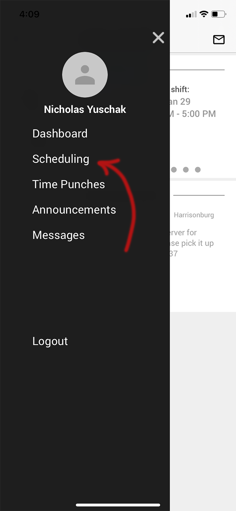
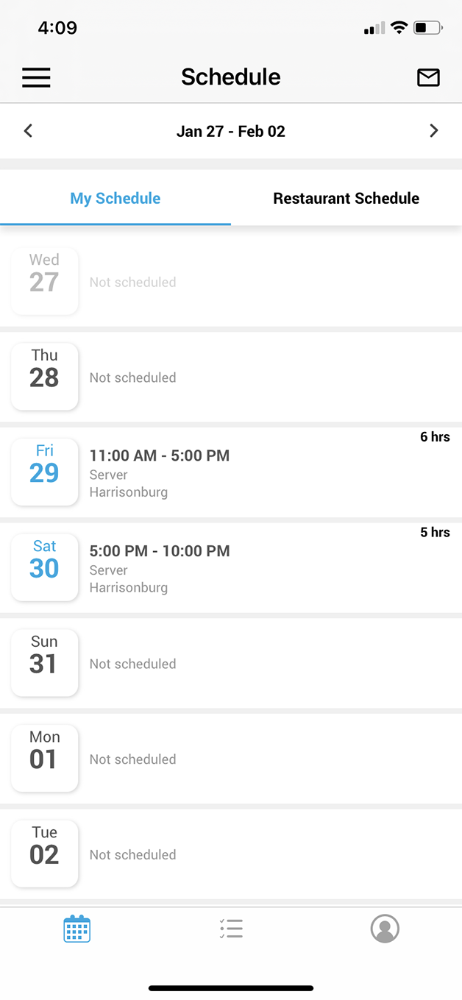
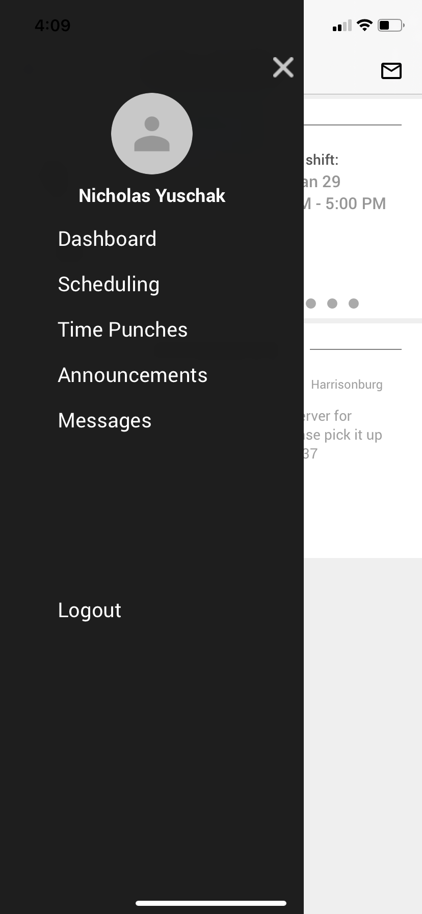
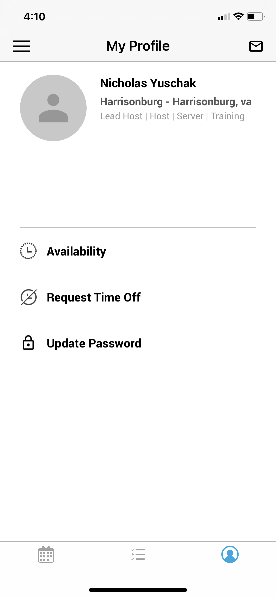
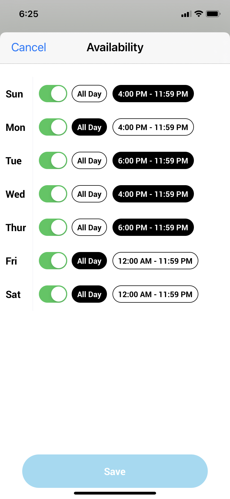
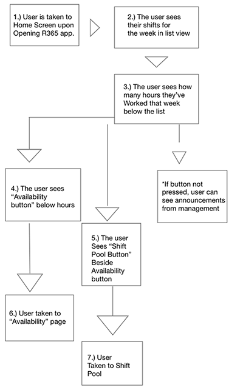
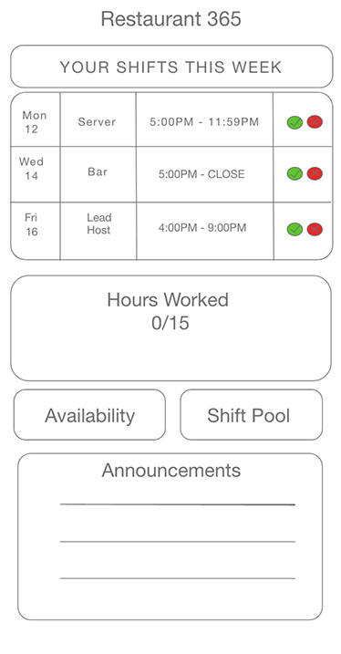
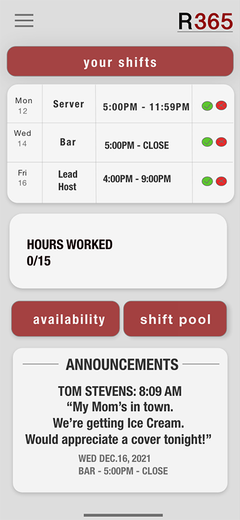

Nicholas Yuschak
R365: RESTAURANT SCHEDULING APP GETS A FACELIFT A USER EXPERIENCE CASE STUDY
Introduction
I'm a server at Capital Ale House. As it is, the job is very intellectually and physically demanding. Part of the job is being able to juggle multiple tasks at once, which can get overwhelming. Therefore, the last thing I want to be worrying about is when I need to show up for work.
R365 is a cloud-based solution to restaurant scheduling. The restaurant industry can be unpredictable at times. Consequently, management needs to be able to make swift schedule changes with short notice and communicate with employees easily. Furthermore, employees need to be able to view their schedule, communicate with their coworkers and manager/s, as well as make changes to their availablity. R365 looks to offer these services to the user in a single digital solution. However, it falls short in a couple critical areas which negatively impact the User's Experience
So, I decided to do something about it.
Hand Coded by Nicholas Yuschak
Last Updated: January 31st, 2021
The Challenge and Goal
As a near daily user of the R365 app, I've compiled a laundry list of frustrations with product. Not only is the interface visually unappealing, many of its features are impractical and require too much effort for the user. The predominant weakness of R365 is that important features like seeing your schedule for the week are buried in unnecessary menus and navigation.
My criticisms of the app as a regular user helped me to craft my design question for this study:
How can we improve the experience of restaurant employees using the R365 app to check their schedules?
The Process
Empathize - Define - Ideate - Prototype - Test - Iterate
This study is an exercise in effective UX Research techniques. This sequence is a popular method in the industry to ensure the product developed is centered around user needs. For this study, I was not required to code a working prototype. Therefore, the "Test" and "Iterate" phases will not be covered.
App Analysis
I started by making site maps of 2 of the app's two weakest User Interface designs according to the respodants of my survey. These are: (1)Seeing one's schedule for the week, and (2) making changes to your availability. The purpose of this section is to obectively layout the flow of the app as it is before redesign, to serve as a point of comparison. Criticisms will be made in the "define" section of this study, and alterations will be made and explained in the "ideate" section of this study.
"My Schedule" feature
Herein lies the first and one of the more frustrating pain points of the R365 app --viewing your schedule for the week. Having to dig through too many menus is a weakness present in many features of this app. In order to access one's schedule for the week, they must go through the following process:
Step One: The User Opens up the R365 App from the home screen of their smartphone. In order to view all their shifts for the week from their homescreen, the user must scroll to the left using this menu with ellipses below it. (See Figure 1.1)
Step Two: If the user wants to see their schedule for the week laid out, they cannot do so from the home screen. They must click the hamburger menu in the upper lefthand corner, which will bring in a sliding menu. From there, the user can click "scheduling".(See Figure 1.2)
Step Three The User arrives at their schedule for the week in list view. (See Figure 1.3)
Figure (1.1)
Figure (1.2)
Figure (1.3)
"My Availability" feature
This was another area of my research which revealed users' frustrations with the app: making changes to their availability. Just like the respondants didn't having to dig through menus to see their shifts for the week, they had similar complaints about making changes to their availability. To do so, the user must go through the following process:
Step One: First, the user must navigate to the same sidebar menu as shown in (Figure 1.2). Next, the User must click on their icon, to be taken to "My Profile" on the next page. (See Figure 2.1)
Step Two: Once the User has arrived at the "My Profile" page, they must select "Availability". (See Figure 2.2)
Step Three The User is finally taken to the "Availability" page. They are met with lots of buttons where they can change their availability. Next to the day of the week is a green sliding button, which allows the user to say whether or not they are available that day. If they are available all day, they can select the "all day" button. If not, they must enter their custom avaiability using the button furthest to the right. (See Figure 2.3)
Figure (2.1)
Figure (2.2)
Figure (2.3)
User needs: Identifying the user and their goals
All users of the R365 in my participant pool were restaurant employees. Employees who use the app fall into three basic categories which serve as general personifactions. Age was not a relevant variable in this study, though participants' ages ranged from 19-29, which suggests a high level of media literacy amongst the participants.
In order to understand the changes users specifically wanted, I created a google form. I sent this form to my coworkers by direct message, receiving a lot of feedback along the way. Many of them enjoyed it, because they are so frustrated with the app.
In this section, I will lay out the general findings of my survey, using them to identify pain-points of the app, expanding more in the "define" section.
- 100% of respondants preferred to see all their shifts for the week listed out as opposed to the ellipse option in figure 1.1
- 57.9% of respondants said that "seeing your shifts for the week" is the most important feature of the app/
- 47.4% of respondants said that making changes to your availability is the most hidden, or difficult to access feature (from the homepage)in R365. Similarly, 31.6% of respondants said putting shifts up for grabs was the most hidden, or difficult to access from the homepage. I think these two actions can be grouped together.
Personas

Persona 1: This person uses R365 everyday. This person is either a junior manager (only ocassionally manages, otherwise a normal employee), bartender, or seasoned server who works 5 days a week on average.
Persona 2: This person uses R365 intermittently throughout the week. This person is either BOH Staff (Kitchen), or FOH Staff (Host, Lead Host, Server, Bartender) who works 1-3 days a week on average.
Persona 3: This person uses R365 sparingly. This person is BOH or FOH staff who works once a week or less. This person is usually not in the regular schedule, and may only pick up shifts as they become available.
The goals of the users of the R365 app are as follows:
- Seeing one's shifts for the week
- Seeing the whole restaurant schedule for the week
- Putting shifts up for grabs
- Making changes to your availability
- Reading announcements from management
- Reading messages from co-workers.
Pain Point #1: Unnecessary menu navigation to see shifts for the week.
The first pain point of R365 is accessing one's schedule for the week. As demonstrated in the App Analysis section, the user has two options: to navigate to the right hand corner and scroll through the ellipse menu to see every shift, OR dig through the sidebar menu on the left, select "scheduling," to then be taken to the week's schedule. This second option is especially cumbersome.
Scrolling through the ellipse menu is sub-optimal because it's a continuous scroll function. I.e, it won't stop scrolling at your last shift for the week, it'll keep repeating as long as you keep scrolling. This makes it difficult for the user to identify when their work week begins, and where it ends.
Pain Point #2: Unnecessary menu navigation to change availability.
Another common complaint amongst the participants of my study about the R365 app is how difficult it is to make changes to ones' availability. As described using the site map (figures 2.1 - 2.3) in the empathize section, the user has to dig through the sidebar menu, being brought to three screens before they can change their availablity.
Pain Point #3: There's no way to tell which shifts are up for grabs.
I also asked respondants to give their thoughts about the app in general to see if they echoed any of my criticisms of it. As shown in the figure above, 31.6% of respondants believed that putting shifts up for grabs was one of the hardest features to access from the app. Responses to the open ended question (like this one) also expressed that criticism.
Ideation: Phase 1 - Synthesize
I got hit with a lot of information at once during my research. However, I was able to narrow down my findings to three key changes users wanted to make to the app in order to make it more usable.
- List out all shifts for the week so that Users can easily see them
- Make the path to changing one's availability simpler by adding a button to the homescreen
- Consolidate shifts which are up for grabs in one location on the home screen so users can more easily see which are available.
Ideation: Phase 2 - User Flow
There's a common denominator amongst the respondants' complaints. Many of their concerns have to do with scheduling (i.e seeing the schedule for the whole week, changing scheduling availability, and putting shifts up for grabs.
This got me thinking...why don't you just put them on the same screen to reduce clicking? I'm sure the users would use the app much more. So, in an attempt to solve all three of user complaints at once, I created a new user flow wireframe to map out my idea.

Ideation: Phase 3 - Wireframes
Once I had a good idea of how I wanted the app to operate with this new user-flow, I made a rough wireframe of what the new User Interface would look like.
This design is an attempt to actualize the synthesis phase, by putting all three things the user felt they were missing on the homepage. This solves the larger, overarching problem of having to dig through menus to perform basic functions.


The Solution
Due to time constraints, we were not required to create a functional prototype for this assignment. However, this is a rough idea of what it might look like on the screen. Let's go through each pain point and how it was addressed in this new design:
Pain Point #1: Unnecessary menu navigation to see shifts for the week.
Solution: as I mentioned, 100% of respondants were frustrated with the ellipse menu of the previous design. Furthermore, 57.9% of respondants though viewing your shifts for the week was the most important feature of the app. Therefore, I felt it was fitting to place it at the top of the sceen in calendar-list view. Now, users can see every shift they have for the week laid out immediately. No confusion! Additionally, green and red buttons in the last column of each row have been added which will allow users to accept shifts or release them to the shift pool.
Pain Point #2: Unnecessary menu navigation to change availability
The Solution: changing ones' availability in R365 was simply a nightmare before this redesign, and the respondants of my study thought so too. No more digging through the side menu for three pages to change your availability. One button now takes you from the home screen straight to the availability page.
Pain Point #3: There's no way to tell which shifts are up for grabs.
Now a thing of the past! 31.6% of respondants complained there was no way to see which shifts were up for grabs. Just like the first two pain points, it required some menu digging. To put all the shifts up for grabs on the home screen along with everything else would cause too much clutter. Therefore, I put a "shift pool" button next to the "availability" button, which takes you to the shift pool.
All three pain points related to one another. It just made sense to group them together in one solution.
Conclusion
Limitations/What I'd Change
(1) I wish I could have gotten a bigger sample size (I had 19 respondants.) However, our staff is limited to only so many workers. If I were to conduct this study for an employer, I would instead reach out to the managers of all Capital Ale House stores across Virginia and ask them to distribute the survey to their employees. Instead, due to time and resource constraints, I was limited to my store in Harrisonburg. (Which brings up another limitation of the app: you can only reach out to employees/managers who work at your store, even though we have locations in Midlothian, Innsbrook, Fairfax, Fredericksburg, and Richmond!
(2) A constraint of the study about which I could not do much is conducting the study during a pandemic. In normal circumstances, I would conduct interviews in person with the app sitting in front of us so that I could see more clearly how the user interacts with the app
Successes
Overall, I’d say the case study was very successful. At risk of sounding boastful, I think I picked the perfect app to redesign. Because my coworkers and I interact with R365 on such a regular basis, we were all familiar with what we liked and didn’t like about the interface. This allowed me to gather a really cooperative and enthusiastic group of participants. Each of them were excited that I was conducting this redesign, echoing some variation of: “Thank goodness, that thing sucks!”
While a sample size of 18 participants has drawbacks for collecting quantitative data, I was really able to get some valuable qualitative data, especially with the interview/free-response question I posed. Their answers gave me a keen insight into their experience using the app, because their frustrations were reflected in their answers.
My participants made my job very easy. I didn’t have to think very hard to come up with pain points…my participants did that for me!
Closing Thoughts
This UX Case study was a great introduction to the course. I think there’s a lot of potential in the future for further research, and for R365 to make simple changes to their UI which would placate many users frustrations.